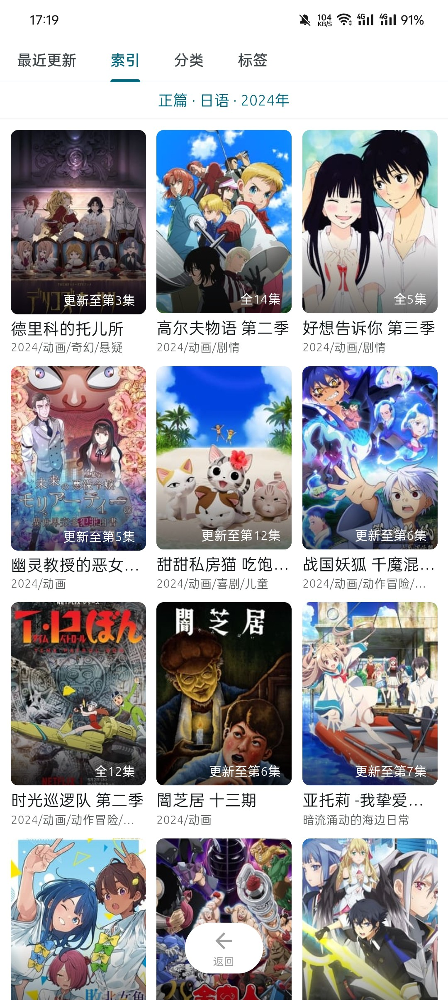

anich 用了大半年：那些当初没料到的习惯和嫌麻烦
从 1.5.12 一路更到现在，说几个长期用下来才显现的细节——顺手的地方、烦人的地方，还有当初高估和低估了的。
装 anich 到现在快八个月了。最初是朋友随手塞的一个番剧工具，说聚合线路多、不用来回切网站。我那时候还没当回事，就想着先装上试试，不行就删。结果八个月过去了，它还在——后来翻官网才确认它真的是做聚合番剧这一件事。
越用越顺手的那几个点
刚装的时候索引页的三维筛选我是嫌麻烦的——正篇、语言、年份各选一遍，不如直接按题材点进去来得快。现在反过来，题材分类我基本不碰了，翻番全靠索引。"2024 年正篇日语"一选，新番整整齐齐排一屏，比在分类页里一页页翻效率高太多。当初觉得多出来的筛选步骤，现在成了最习惯的入口。

还有版本更新这件事。anich 几乎每个月都有新版本，1.5 系列从 1.5.12 更到现在中间跨了十来个小版本。起初我还纠结要不要每次都更，怕更出问题。后来发现不更反而更容易出问题——聚合源时不时会调整接口，老版本的下载链路说断就断。1.5.25 那版一次修了三个下载链路的问题，我就是因为没及时更，卡了三天才发现。现在更新提醒一弹就点，习惯了。实在没收到提醒就自己去下载拿新版。
一起看功能也是越用越顺。1.5.17 加的，刚出来的时候跟朋友试了一次，大家各自开各自的应用，分享房号加入，房主控进度，所有人画面同步。异地同好群里追新番，约好时间开房，比各自在家里对着表掐点、中途有人上厕所暂停还得在群里喊一句方便多了。房间里弹幕照常飘，等于把坐在一起看番的感觉搬了一半过来。
当初没料到的烦心事
说个反直觉的——弹幕太多这件事，我当初以为是好事，现在反而觉得烦。anich 的弹幕密度挺高，默认设置下新番首播当晚画面基本被弹幕盖住。刚看的时候觉得热闹，时间长了发现每次开看都得先调一遍弹幕密度和位置。应用内是有关闭和密度调节的，但聚合线路多的时候不同线路的弹幕量差异特别大，换条线路就又得重新调。
另一个烦点是功能入口经常挪位置。1.5 系列迭代快，新版本经常把某个设置从 A 分组移到 B 分组。外挂字幕入口刚出来的时候我在设置面板里找了五分钟，翻了半天才发现被塞进了一个之前没注意的子菜单。版本更新 FAQ 里说"先确认已升到最新版，在设置里找功能的新位置"，说起来轻巧，实际每次更新完都要有一个重新适应的过程。实在找不到就翻anich文档里的功能对照表，比瞎试快多了。
还有一个从来没真正好用过的功能——离线缓存。理论上缓存下来的集数可以离线看，还支持外挂字幕。但我缓存过几次，要么是下载到一半网络波动中断了，重连之后进度条不接着走；要么是缓存完成但离线打开时音画不同步。后来干脆放弃缓存了，出门看番直接找信号好的地方在线播，反而省心。
每天离不开和碰都没碰的
离不开的是索引页筛选和收藏同步。前者已经说过了，后者是真的刚需。换手机的时候登录账号，收藏列表自动同步过来，连观看记录都在。当初装的时候没把账号功能当回事，觉得本地存着就行，真换手机那一下才发现云同步救了命。
碰都没碰的有两个。一个是外挂字幕，虽然 1.5.25 就加了这个功能，也确实解决了有些线路字幕机翻味重或时间轴错位的问题，但我看番的源大部分自带字幕且质量够用，真正需要手动导字幕的场景一个月能碰上一两回撑死。功能很好，就是用不上。另一个是追番日历，新番播出日提醒这件事，我都是靠脑子里记和社交平台刷到的，从来没打开过日历页面。
一些当初的判断被修正了
最典型的是版本更新节奏。当初看到"几乎每月一个新版本"的描述，第一反应是"这也太折腾了，是不是功能还没做稳就急着发"。八个月下来才明白，聚合工具跟内容源绑得太死，上游一变下游就得跟着调，不频繁更新反而会被源抛弃。现在觉得这个更新频率是合理的，甚至某些月份没更还会有点慌，担心是不是哪里出了问题。
另一个判断是关于"一起看"的定位。刚听说的时候以为是个噱头功能，新鲜两次就会闲置。实际情况是异地同好群里现在追番默认开房，没人再各自看各自的然后群里吐槽。进度同步这件事听起来小，但实际体验差很多。
什么情况下会卸载它
短期内应该不会。但有几个信号出现的话我会考虑：聚合源大面积挂掉、连续两三个小版本没有任何实质性更新、或者账号同步功能出问题。anich 现在的核心价值就是聚合线路多、更新快，这两点任何一个崩塌，替代品就太多了。
总而言之，这八个月里 anich 从"先装上试试"变成了日常打开的工具，过程中没有什么惊喜时刻，更多是习惯的养成和偶尔的烦躁。长期用下来的软件大抵如此——不是因为它完美，而是因为你已经在它上面投了足够多的使用习惯和收藏记录，换起来的成本比继续用它高。